User guide
Generalization
Though naturf is demonstrated for the conterminous United States (CONUS), the package could easily be used in research ranging from regional to global analysis.
naturf requires the following inputs to be able to operate:
A shapefile of buildings as polygons with height data.
A shapefile of square polygons tessellated over the study area.
A CSV file matching each tile name to its index number.
Let us know if you are using naturf in your research in our discussion thread!
Setting up a naturf run
The following with indroduce you to the input data required by naturf and how to set up a configuration file to run naturf.
Splitting the building shapefile into tiles
naturf works optimally with inputs of building shapefiles as regular square tiles that can be processed in parallel. Experiments with Los Angeles found that tiles of 3.2 km by 3.2 km were the most computationally efficient at 100 meter output resolution.
Generate a tessellation
The first step to splitting the input building shapefile into tiles is to load the shapefile into any GIS software (ArcPro, ArcMap, QGIS, etc.) and run the Generate Tessellation tool for ArcPro/ArcMap; Create Grid for QGIS) with the desired tile size. After the tessellation is created, note the center latitude and longitude in decimal degrees as well as the coordinates of the bottom left corner of the tessellation. All of those coordinates will be needed to set the projection of the output data and to tell WRF where to start placing the data.
Assign index numbers
After the tessellation is created, the next step is to use the “Calculate Field” tool to assign index numbers to each tile. By default, the “Generate Tessellation” tool assigns each tile an ID associated with its location, with the letters representing the columns and x-positions and the numbers representing the rows and the y-position. The letters go from A to Z, AA to ZZ, etc. from left to right and the numbers increase as they go top to bottom. The following fields will need to be created and calculated: Columns, Rows, Let_To_Num, First_Index_X, Second_Index_X, First_Index_Y, and Second_Index_Y.
First, split the IDs into fields representing their columns and rows:
Columns = !GRID_ID!.split("-")[0]
Rows = !GRID_ID!.split("-")[1]
Next, assign the y-indices (Note: WRF requires the indexing to begin from the bottom left corner of the dataset):
Second_Index_Y = 32 * ((Number of rows) - !Rows! + 1)
First_Index_Y = !Second_Index_Y! - 31
The x-indices require an additional step. First, calculate the Let_To_Num field by turning the letters in the Columns field into numbers using the code below, which can be adjusted to accomodated as many columns as needed:
Expression:
LetToNum(!Columns!)
def LetToNum(feat):
letters = list(feat)
if len(letters) == 1:
number = ord(letters[0]) - 64
elif letters[0] == 'A':
number = 26 + ord(letters[1]) - 64
else:
number = 52 + ord(letters[1]) - 64
return number
Then, calculate the X indices much the same as the Y indices.
Second_Index_X = 32 * !Let_To_Num!
First_Index_X = !Second_Index_X! - 31
The attribute table should then be exported to an Excel file using the “Table to Table” tool, and the rest of the indexing will be done in Excel.
Create CSV file
Now that the tessellation attribute table is an Excel file, all columns can be deleted except for the grid ID column and the indices columns. In new columns, use =TEXT(cell, “00000”) to add leading zeroes to the indices (at least 5 digits are required, more can be added if necessary). In another column, concatenate the indices using =CONCAT(cell1,”-“,cell2,”.”,cell3,”-“,cell4). Copy the GRID_ID and concatenated index numbers(important: with headers) into a separate spreadsheet and save as a CSV. This CSV will allow naturf to assign the correct index name to the corresponsing binary file.
Spatial join and split by attribute
Back in the GIS software, perform a spatial join with the buildings shapefile being the target features and the tessellation shapefile being the join features. This will create a buildings shapefile where every building has a grid ID associated with it. The last step is to use the “Split by Attribute” tool to separate the buildings into shapefiles for each tile. These shapefiles will be the input to naturf along with the CSV with index names.
Fundamental equations and concepts
Supporting Parameters
The following parameters/concepts are not output from naturf by default, but they contribute to the calculation of the output parameters.
Plan Area
When calculating parameters, naturf creates a buffer around each target building called the plan (or dilated) area. Each building has its own plan area which identifies neighbors to that target building which are important for the calculation of parameters. For the parameter definitions below, total plan area refers to the area of that buffer around the target building, while building plan area refers to the sum of building footprints within the total plan area. Total plan area should always be a larger value than the building plan area.
Frontal Length
For the urban parameters calculated by naturf, frontal length refers to the wall length perpendicular to a given direction for all buildings within the target building’s total plan area.
Frontal Area
For the urban parameters calculated by naturf, frontal area refers to the wall area perpendicular to a given direction for all buildings within the target building’s total plan area.
Lot Area
For the urban parameters calculated by naturf, lot area refers to the total surface area of all buildings within a given building’s total plan area divided by the number of buildings in the total plan area.
Building Height Limit
Following NUDAPT, naturf bins building heights into five meter increments from 0 to 75 meters. Any building with a height greater than 75 meters is considered as ending at 75 meters.
Output Parameters
Frontal Area Density (1-60)
Frontal area density is the frontal area at a certain height increment divided by the total plan area. naturf calculates frontal area density from the four cardinal directions (east, north, west, south) and at 5 meter increments from ground level to 75 meters. Parameters 1-15 represent the north, parameters 16-30 represent the west, parameters 31-45 represent the south, and parameters 46-60 represent the east. For instance, parameter 1 gives the north-facing wall area for each building and its neighbors divided by the total plan area. [Burian2003] Eq. 14
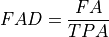
where FAD is Frontal area density; FA is the frontal area of the wall from the current direction and height level in 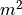; TPA is the total plan area in .
Plan Area Density (61-75)
Plan area density is the ratio of building plan area to the total plan area, calculated in 5 meter increments from ground level to 75 meters. naturf projects the building footprint vertically to the building height, meaning plan area density is the same at every vertical level. [Burian2003] Eq. 7
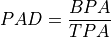
where, PAD is the plan area density; BPA is the building plan area in ; TPA is the total plan area in .
Rooftop Area Density (76-90)
Rooftop area density is the ratio of building rooftop area to the total plan area, calculated in 5 meter increments from ground level to 75 meters. Because naturf projects building footprints vertically to the building height, these parameters are equal to the plan area density. [Burian2003] Eq. 7
Plan Area Fraction (91)
Plan area fraction is the ratio of building plan area to the total plan area, calculated at ground level. For naturf, this is equal to plan area density at any height increment. [Burian2003] Eq. 4
Mean Building Height (92)
The average building height of all buildings within the total plan area.
Standard Deviation of Building Heights (93)
The standard deviation of building heights for all buildings within the total plan area.
Area Weighted Mean of Building Heights (94)
The average height of all buildings within the total plan area weighted by the total plan area. [Burian2003] Eq. 3
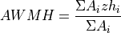
where, AWMH is the area weighted mean height in m; A_i is the current building plan area in m^2; zh_i is the current building height in m.
Building Surface Area to Plan Area Ratio (95)
The ratio of all the surface areas of a building to the total plan area. [Burian2003] Eq. 16
Frontal Area Index (96-99)
Frontal area index is the ratio of the entire frontal area of a building to the total plan area. naturf calculates the frontal area index from the four cardinal directions. Because buildings often do not face a cardinal direction head on, naturf uses the average alongwind and crosswind distance from the current building centroid to all other building centroids for the total plan area. [Burian2003] Eq. 12
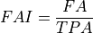
where, FAI is frontal area index; FA is the frontal area of the wall from the current direction in ; TPA is the total plan area in .
Complete Aspect Ratio (100)
The ratio of building surface area and exposed ground area to the total plan area. [Burian2003] Eq. 15
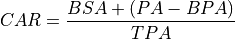
where, BSA is the building surface area in ; BPA is the building plan area in ; TPA is the total plan area in .
Height-to-Width Ratio (101)
The ratio of the building height to the street width. naturf generalizes this as the ratio of average height of buildings in the total plan area to average distance from the current building to all other buildings in the total plan area. If a building has no other buildings in its total plan area, the average distance is set to a default value. [Burian2003] Eq. 18
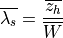
where, 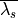 is the average height-to-width ratio; 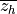 is the average building height in m; 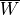 is the average distance between buildings.
Sky-View Factor (102)
The fraction of visible sky in a given area. naturf generalizes the distance between buildings to be the average distance between the current building and all other buildings in the total plan area. [Dirksen2019] Eq. 1
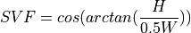
where, SVF is the sky-view factor; H is the building height in m; W is the distance between buildings in m.
Grimmond & Oke Roughness Length (103)
[GrimmondOke1999] Eq. 2

where, GORL is Grimmond & Oke rougness length in m; zh is the building height in m.
Grimmond & Oke Displacement Height (104)
[GrimmondOke1999] Eq. 1
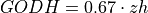
where, GODH is Grimmond & Oke displacement height in m; zh is building height in m.
Raupach Roughness Length (105, 107, 109, 111)
[Raupach1994] Eq. 4
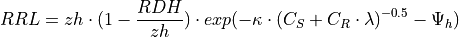
where, RRL is the Raupach roughness length in m; RDH is the Raupach displacement height in m;  is von Kármán’s constant = 0.4; C_S is the substrate-surface drag coefficient = 0.003; C_R is the roughness-element drag coefficient = 0.3;
is von Kármán’s constant = 0.4; C_S is the substrate-surface drag coefficient = 0.003; C_R is the roughness-element drag coefficient = 0.3;  is the frontal area index; 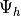 is the roughness-sublayer influence function = 0.193.
is the frontal area index; 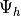 is the roughness-sublayer influence function = 0.193.
Raupach Displacment Height (106, 108, 110, 112)
[Raupach1994] Eq. 8
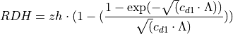
where, RDH is the Raupach displacement height in m; is a constant = 7.5; is frontal area index times 2.
Macdonald et al. Roughness Length (113-116)
[Macdonald1998] Eq. 22
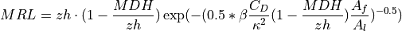
where, MRL is the Macdonald roughness length in m; zh is the building height in m; MDH is the Macdonald displacement height in m;  is the beta coefficient = 1; 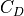 is the obstacle drag coefficient = 1.12; is von Kármán’s constant = 0.4; 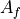 is the frontal area of the building in ; 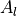 is the lot area of the building in .
is the beta coefficient = 1; 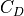 is the obstacle drag coefficient = 1.12; is von Kármán’s constant = 0.4; 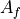 is the frontal area of the building in ; 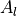 is the lot area of the building in .
Macdonald et al. Displacement Height (117)
[Macdonald1998] Eq. 23
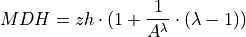
where, MDH is the Macdonald displacement height in m; zh is the building height in m; A is a constant = 3.59; is the plan area density.
Vertical Distribution of Building Heights (118-132)
The vertical distribution of building heights is a representation of where buildings are located at each vertical level. naturf represents buildings as arbitrary float values in an array, and each vertical dimension of the array shows how many buildings reach that height. [Burian2003]
References
- Burian2003(1,2,3,4,5,6,7,8,9,10)
Burian, S. J., Han, W. S., & Brown, M. J. (2003). Morphological analyses using 3D building databases: Houston, Texas. Department of Civil and Environmental Engineering, University of Utah.
- Dirksen2019
Dirksen, M., Ronda, R. J., Theeuwes, N. E., & Pagani, G. A. (2019). Sky view factor calculations and its application in urban heat island studies. Urban Climate, 30, 100498.
- GrimmondOke1999(1,2)
Grimmond, C. S. B., & Oke, T. R. (1999). Aerodynamic properties of urban areas derived from analysis of surface form. Journal of Applied Meteorology and Climatology, 38(9), 1262-1292.
- Macdonald1998(1,2)
Macdonald, R. W., Griffiths, R. F., & Hall, D. J. (1998). An improved method for the estimation of surface roughness of obstacle arrays. Atmospheric environment, 32(11), 1857-1864.
- Raupach1994(1,2)
Raupach, M. R. (1994). Simplified expressions for vegetation roughness length and zero-plane displacement as functions of canopy height and area index. Boundary-layer meteorology, 71(1), 211-216.